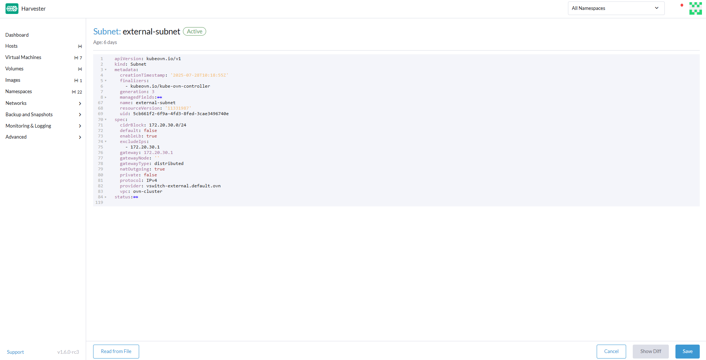
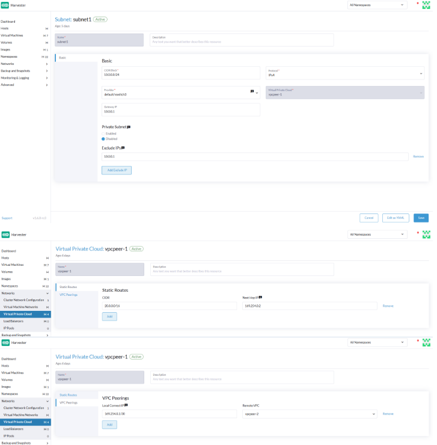

|
Este documento ha sido traducido utilizando tecnología de traducción automática. Si bien nos esforzamos por proporcionar traducciones precisas, no ofrecemos garantías sobre la integridad, precisión o confiabilidad del contenido traducido. En caso de discrepancia, la versión original en inglés prevalecerá y constituirá el texto autorizado. |
Nube Privada Virtual
|
Todas las características que utilizan Kube-OVN se consideran experimentales. Para más información sobre características experimentales, consulta Etiquetas de Características. |
Una nube privada virtual (VPC) es una red lógicamente aislada que proporciona control total sobre direcciones IP, subredes, tablas de rutas, cortafuegos y gateways dentro de una infraestructura en la nube. Las VPC permiten el despliegue seguro y escalable de recursos virtualizados como computación, almacenamiento y servicios de contenedores.
La siguiente tabla describe los componentes clave de una VPC:
| Componente | Descripción |
|---|---|
VPC |
Espacio de red de nivel superior con un rango de CIDR de IP definido por el usuario |
subred |
Subdivisión del espacio IP de la VPC; puede ser pública o privada |
tabla de rutas |
Define las reglas de enrutamiento de tráfico dentro y fuera de la VPC |
internet gateway |
Habilita el acceso a internet saliente para subredes públicas |
gateway NAT |
Permite a las subredes privadas acceder a internet (solo saliente) |
grupo de seguridad |
Cortafuegos virtual que controla el tráfico entrante y saliente por instancia |
peering de VPC |
Conexiones de peering opcionales o híbridas entre diferentes VPC o redes in situ |
SUSE Virtualization y la arquitectura de integración de Kube-OVN
El siguiente diagrama ilustra cómo se conectan lógicamente las VPC, subredes, redes superpuestas y máquinas virtuales en SUSE Virtualization con Kube-OVN. Esta arquitectura incluye subredes públicas y privadas, permitiendo la separación del tráfico que enfrenta a Internet de los recursos internos. Además, esta arquitectura permite estructuras de red L3 y L2 escalables y aisladas a través del clúster.
[ VPC: vpc-1 ]
│
┌─────────────────────┴─────────────────────┐
│ │
[ Subnet: vswitch1-subnet ] [ Subnet: vswitch2-subnet ]
CIDR: 172.20.10.0/24 CIDR: 172.20.20.0/24
Gateway: 172.20.10.1 Gateway: 172.20.20.1
│ │
[ Overlay Network: vswitch1 ] [ Overlay Network: vswitch2 ]
│ │
┌────────┴────────┐ ┌────────┴────────┐
│ │ │ │
[VM: vm1-vswitch1] [VM: vm2-vswitch1] [VM: vm1-vswitch2]
IP: 172.20.10.X IP: 172.20.10.Y IP: 172.20.20.Z
| Componente | Plataforma | Responsabilidad Lógica |
|---|---|---|
Kube-OVN |
Dominio L3 de nivel superior, gestiona agrupaciones de subredes |
|
Kube-OVN |
Asignación de CIDR, enrutamiento, gateway, reglas de firewall |
|
SUSE Virtualization |
Conmutador virtual L2 (puente OVS), mapeado a la subred |
|
SUSE Virtualization |
Ejecuta cargas de trabajo de computación, conectado a la red superpuesta |
Esta arquitectura tiene las siguientes características clave:
-
Kube-OVN crea la VPC y sus subredes.
Cada subred incluye un bloque CIDR y una IP de gateway, y se vincula a una red superpuesta (como proveedor). Kube-OVN impone un mapeo uno a uno entre la subred y la red superpuesta para evitar enrutamientos ambiguos, colisiones de tráfico y problemas de aislamiento.
-
SUSE Virtualization define las redes superpuestas.
Cada red superpuesta se considera un proveedor en Kube-OVN. Cuando creas una subred en la interfaz de usuario de SUSE Virtualization, puedes seleccionar estas redes superpuestas en la lista Proveedor (tipo:
OverlayNetwork) en la pantalla Subred:Crear. -
SUSE Virtualization proporciona máquinas virtuales que están conectadas a una red superpuesta.
Cada máquina virtual utiliza el Kube-OVN IPAM para solicitar una dirección IP tras el arranque. La máquina virtual recibe su dirección IP, gateway e información de enrutamiento de la subred asociada.
-
Kube-OVN gestiona toda la lógica L3 (enrutamiento, NAT, peering de VPC e aislamiento).
SUSE Virtualization se centra únicamente en la computación y la conexión de red. La aplicación de directivas de red, subredes privadas y NAT de salida son gestionadas por Kube-OVN.
Esta arquitectura ofrece los siguientes beneficios:
-
Separación clara de preocupaciones: SUSE Virtualization gestiona la virtualización; Kube-OVN gestiona SDN.
-
Escalabilidad: Nuevas VPCs, subredes y emparejamientos no requieren cambios en el kernel de SUSE Virtualization.
-
Redes nativas de Kubernetes: Kube-OVN se integra estrechamente con Kubernetes, soportando CRDs, políticas, etc.
-
Aislamiento y observabilidad: Control centralizado sobre IPs, ACLs y enrutamiento a través de Kube-OVN.
Configuración de VPC y subred.
Configuraciones de VPC.
En SUSE Virtualization, una nube privada virtual (VPC) es un contenedor de red lógico que ayuda a gestionar y aislar subredes y tráfico. Define el enrutamiento, NAT y segmentación de red.
SUSE Virtualization proporciona una VPC por defecto llamada ovn-cluster, y dos subredes asociadas llamadas ovn-default y join para operaciones internas de Kube-OVN. Puedes crear VPCs adicionales haciendo clic en Create en la pantalla de Virtual Private Cloud.

Al crear VPCs personalizadas, debes configurar los ajustes relacionados con las rutas definidas para dirigir el tráfico y las conexiones que permiten la comunicación entre las VPC locales y remotas. La siguiente tabla describe la configuración en la pantalla de detalles de Nube Privada Virtual:
| Sección | Valor | Descripción |
|---|---|---|
Información general |
Nombre |
Nombre de la VPC |
Información general |
Descripción |
Descripción de la VPC |
Pestaña Rutas Estáticas |
CIDR |
Rango de direcciones IP de destino para la ruta (por ejemplo, |
Pestaña Rutas Estáticas |
IP del Siguiente Salto |
Dirección IP a la que se debe reenviar el tráfico para el CIDR (por ejemplo, la dirección IP de la puerta de enlace o del router) |
Pestaña Peering de VPC |
IP de Conexión Local |
Dirección IP en la VPC local que se utilizará para la conexión de peering |
Pestaña Peering de VPC |
VPC Remota |
VPC remota objetivo que está emparejada con la VPC local |

Configuración de subred
Cada subred define un bloque CIDR y un gateway, y se asigna a una SUSE Virtualizationred superpuesta (interruptor virtual). También incluye controles para NAT y reglas de acceso.
Al crear subredes, debes configurar los ajustes relevantes para tu caso de uso. En la mayoría de los casos, puedes empezar configurando el Bloque CIDR, Puerta de enlace y Proveedor. La siguiente tabla describe la configuración en la pantalla de detalles de Subred:
| Sección | Valor | Descripción |
|---|---|---|
Información general |
Nombre |
Nombre de la subred |
Información general |
Descripción |
Descripción de la subred |
Básica |
Bloque CIDR |
Rango de direcciones IP asignado a la subred (por ejemplo, |
Pestaña Básica |
Protocolo |
Versión del protocolo de red utilizada para esta subred (IPv4 o IPv6) |
Pestaña Básica |
Proveedor |
Red superpuesta (conmutador virtual) a la que está vinculada la subred |
Pestaña Básica |
Nube Privada Virtual |
Nube privada virtual a la que pertenece la subred |
Pestaña Básica |
Gateway |
Dirección IP que actúa como gateway predeterminado para las máquinas virtuales en la subred |
Pestaña Básica |
Subred Privada |
Configuración que restringe el acceso a la subred y asegura el aislamiento de la red |
Pestaña Básica |
Permitir Subredes |
CIDRs que tienen permitido acceder a la subred cuando Subred Privada está habilitada |
Pestaña Básica |
Excluir IPs |
Lista de direcciones IP que no deben ser asignadas automáticamente a las máquinas virtuales |

Cada subred creada tiene una configuración llamada <<`natOutgoing` setting,natOutgoing>>, que habilita la traducción de direcciones de red (NAT) para el tráfico que sale de la subred y va a destinos fuera de la VPC. Este ajuste está inhabilitado por defecto. Para habilitarlo, debes editar la configuración YAML de la subred y establecer el valor en natOutgoing: true.

Por defecto, las subredes en diferentes VPCs no pueden comunicarse directamente. Para habilitar una comunicación segura y controlada entre ellas, debes establecer una conexión de peering de VPC. Sin ello, el tráfico de la subred en cada VPC permanece completamente aislado.
|
Las conexiones de peering de VPC solo se pueden establecer entre VPCs personalizadas. |

Creando una VPC
Realiza los siguientes pasos para crear y configurar una VPC.
-
Habilita kubeovn-operator.
El complemento kubeovn-operator despliega Kube-OVN en el clúster SUSE Virtualization.

-
Debes crear una red superpuesta separada para cada subred que planeas crear.
-
Crea una VPC.
-
Ve a Redes → Nube Privada Virtual, y luego haz clic en Crear.
-
En la pantalla Nube Privada Virtual:Crear, especifica un nombre único para la VPC.
-
Haga clic en Crear.
-
-
Crea subredes.
-
Ve a Redes → Nube Privada Virtual.
-
Localiza la VPC que creaste, y luego haz clic en Crear Subred.
-
En la pantalla Subnet:Create, configura los ajustes relevantes para tu entorno.
Debes vincular cada subred a una red de superposición dedicada. En el campo Provider, la interfaz de usuario SUSE Virtualization solo muestra redes de superposición que no están vinculadas a otras subredes, aplicando automáticamente el mapeo uno a uno.
-
Haz clic en Edit as YAML.
-
Bajo
spec, añadeenableDHCP: true.Esto asegura que las máquinas virtuales conectadas a la subred puedan obtener las opciones correctas de ruta predeterminada.
-
Haga clic en Crear.
-
-
Crea máquinas virtuales.
-
Configura los ajustes que sean relevantes para cada máquina virtual.
En la pestaña Networks, debes seleccionar la red de superposición correcta en el campo Network.
-
Haga clic en Crear.
La máquina virtual obtiene su dirección IP de la subred a la que está conectada.
-
Selecciona ⋮ → Edit YAML.
-
Cambia el valor de
spec.domain.devices.interface.binding.nameamanagedtap.Esto asegura que la máquina virtual obtenga las opciones DHCP correctas de la subred en lugar de usar el servidor DHCP predeterminado de KubeVirt.
Si no realizas este paso, la máquina virtual no tendrá una ruta predeterminada. Hasta que la ruta predeterminada esté correctamente configurada en el sistema operativo invitado, los intentos de acceder a destinos externos y a máquinas virtuales en diferentes subredes fallarán.
Para más información, consulta Limitaciones de redes de superposición.
-
Reinicia cada máquina virtual.
-
Configuración y verificación de VPC de ejemplo
-
Crea redes de superposición con la siguiente configuración:
-
Nombre:
vswitch1yvswitch2 -
Tipo:
OverlayNetwork
-
-
Crea una VPC llamada
vpc-1. -
Crea dos subredes en
vpc-1con la siguiente configuración:Nombre CIDR Proveedor IP de gateway vswitch1-subnet172.20.10.0/24default/vswitch1172.20.10.1vswitch2-subnet172.20.20.0/24default/vswitch2172.20.20.1 -
Crea tres máquinas virtuales con la siguiente configuración:
-
Nombre:
vm1-vswitch1,vm2-vswitch1yvm1-vswitch2 -
pestaña Conceptos básicos
-
CPU:
1 -
Memoria:
2
-
-
pestaña Volúmenes
-
Volumen de imagen: Una imagen de nube (por ejemplo,
noble-server-cloudimg-amd64)
-
-
pestaña Redes
-
Red:
default/vswitch1
-
-
pestaña Opciones avanzadas
users: ` `- name: ubuntu ` `groups: [ sudo ] ` `shell: /bin/bash ` `sudo: ALL=(ALL) NOPASSWD:ALL ` `lock\_passwd: false
Una vez que las máquinas virtuales comiencen a funcionar, el nodo muestra el servidor NTP
0.suse.pool.ntp.orgy la dirección IP.
-
-
Abre las consolas en serie de
vm1-vswitch1yvm1-vswitch2, y luego añade una ruta por defecto en cada una (si no existe) utilizando los siguientes comandos:-
vm1-vswitch1(172.20.10.6):#sudo ip route add default via 172.20.10.1 dev enp1s0
-
vm1-vswitch2(172.20.20.3):#sudo ip route add default via 172.20.20.1 dev enp1s0
Si una máquina virtual quiere enviar tráfico a una red desconocida (no en la subred local), el tráfico debe ser reenviado a la IP de gateway especificada configurada para la subred conectada utilizando la interfaz de red especificada. En este ejemplo,
vm1-vswitch1debe reenviar el tráfico a través de172.20.10.1, mientras quevm1-vswitch2debe reenviar el tráfico a través de172.20.20.1. Ambas máquinas virtuales utilizan la interfaz de redenp1s0.
-
-
Verifica la conectividad utilizando el comando
ping.-
Utiliza
vm1-vswitch1(172.20.10.6) para hacer ping avm1-vswitch2(172.20.20.3). -
Utiliza
vm1-vswitch2(172.20.20.3) para hacer ping avm1-vswitch1(172.20.10.6).Dado que
vm1-vswitch1yvm1-vswitch2están en la misma subred, pueden comunicarse entre sí sin ninguna configuración de ruta predeterminada.Si no existe una ruta predeterminada en la máquina virtual antes de ejecutar el comando ping, la consola muestra el mensaje
ping: connect: La red es inalcanzable.
-
Configuración de subred privada
Cuando la configuración de Subred Privada está habilitada en una subred, no puede comunicarse con otras subredes en el mismo VPC por defecto. El tráfico entre subredes está permitido solo si añades los bloques CIDR de las otras subredes a la lista de Permitir Subredes de la subred privada.
La configuración de Subred Privada ofrece los siguientes beneficios:
-
Segmentación de red de alta precisión (micro-segmentación)
-
Aislamiento de red más fuerte dentro del VPC y reducción de la superficie de ataque potencial
-
Prevención del acceso no autorizado a recursos sensibles o críticos dentro del VPC
-
Comunicación controlada y selectiva entre subredes a través de la lista de Permitir Subredes
Verificación de subred privada de ejemplo
-
Ve a Redes → Nube Privada Virtual.
-
Localiza
vswitch1-subnet, y luego selecciona ⋮ → Editar Config. -
Habilita la configuración de Subred Privada.
-
Abre la consola serie de
vm1-vswitch1(172.20.10.6), y luego haz ping avm1-vswitch2(172.20.20.3).El intento de ping falla porque
vm1-vswitch1está aislado. Habilitar la configuración de Subred Privada envswitch1-subnetprohíbe quevm1-vswitch1se comunique con máquinas virtuales en otras subredes. -
Regresa a la pantalla de Nube Privada Virtual, localiza
vswitch1-subnet, y luego selecciona ⋮ → Editar Config. -
Añade
172.20.20.0/24al campo de Permitir Subredes. -
Abre la consola serie de
vm1-vswitch1(172.20.10.6), y luego haz ping avm1-vswitch2(172.20.20.3).El intento de ping es exitoso.
Configuración de natOutgoing
La configuración de natOutgoing habilita la traducción de direcciones de red (NAT) para el tráfico que sale de la subred y va a destinos fuera de la VPC. Este ajuste está inhabilitado por defecto. Para habilitarlo, debes editar la configuración YAML de la subred y establecer el valor en natOutgoing: true.
Ejemplo de configuración y verificación de natOutgoing
-
Crea una red de superposición con la siguiente configuración:
-
Nombre:
vswitch-external -
Tipo:
OverlayNetwork
-
-
En la VPC
ovn-cluster, crea una subred con la siguiente configuración:-
Nombre:
external-subnet -
Bloque CIDR:
172.20.30.0/24 -
Proveedor:
default/vswitch-external -
IP de gateway:
172.20.30.1
-
-
Crea una máquina virtual con la siguiente configuración:
-
Nombre:
vm-external -
pestaña Conceptos básicos
-
CPU:
1 -
Memoria:
2
-
-
pestaña Volúmenes
-
Volumen de imagen: Una imagen de nube (por ejemplo,
noble-server-cloudimg-amd64)
-
-
pestaña Redes
-
Red:
default/vswitch-external
-
-
pestaña Opciones avanzadas
users: ` `- name: ubuntu ` `groups: [ sudo ] ` `shell: /bin/bash ` `sudo: ALL=(ALL) NOPASSWD:ALL ` `lock\_passwd: false
-
-
Abre la consola serie de
vm-external(172.20.30.2), y luego haz ping a8.8.8.8.La consola muestra el mensaje
ping: connect: La red es inalcanzable. -
Añade una ruta por defecto utilizando el siguiente comando:
#sudo ip route add default via 172.20.30.1 dev enp1s0
De nuevo, el intento de ping falla.
-
Ve a la pantalla de Nube Privada Virtual.
-
Localiza
external-subnet, y luego selecciona ⋮ → Editar Config. -
Haz clic en Edit as YAML.
-
Localiza el campo
natOutgoing, y luego cambia el valor atrue. -
Haz clic en Guardar.
-
Abre la consola serie de
vm-external(172.20.30.2), y luego haz ping a8.8.8.8.El intento de ping es exitoso.
Emparejamiento de VPC
El emparejamiento de VPC es una conexión de red que permite a las máquinas virtuales en diferentes VPCs comunicarse utilizando direcciones IP privadas.
Cada VPC es un espacio de nombres de red separado con su propio bloque CIDR, tabla de enrutamiento y límite de aislamiento. Sin el emparejamiento de VPC, las máquinas virtuales están aisladas incluso cuando están alojadas dentro del mismo SUSE Virtualization clúster. Una vez que se establece una conexión de emparejamiento, las reglas de enrutamiento se actualizan automáticamente para permitir que las máquinas virtuales se comuniquen de forma privada.
El emparejamiento de VPC ofrece las siguientes ventajas:
-
Las VPCs permanecen lógicamente y administrativamente aisladas. Esto es ideal para configuraciones de múltiples inquilinos que requieren un fuerte aislamiento de red con conectividad opcional. Puedes organizar las cargas de trabajo por equipo, función o entorno (por ejemplo, desarrollo frente a producción).
-
El tráfico entre VPCs no atraviesa Internet público, reduciendo la exposición. También puedes utilizar tablas de rutas y reglas de firewall para controlar estrictamente el acceso a la red.
-
Mantener el tráfico dentro de la nube interna no solo mejora el rendimiento, sino que también reduce costos, proporcionando una ventaja significativa sobre el uso de Internet público o VPNs.
El siguiente diagrama muestra cómo las VPCs y subredes en Kube-OVN se mapean a redes superpuestas y máquinas virtuales en SUSE Virtualization. Esta arquitectura te permite crear estructuras de red L3 y L2 escalables y aisladas a través del clúster.
┌───────────────────────────────────────────┐
│ Kube-OVN │
│ (SDN Controller / IPAM) │
└───────────────────────────────────────────┘
│
┌──────────────────────────────────────────────────────┴──────────────────────────────────────────────────────────┐
│ │ │
┌──────────────┐ ┌──────────────┐ ┌──────────────┐
│ VPC: vpc-1 │ │VPC: vpcpeer-1│ ◀────────── peering ──────────▶ │VPC: vpcpeer-2│
└──────────────┘ └──────────────┘ └──────────────┘
│ │ │
▼ ▼ ▼
┌──────────────────────────────┐ ┌──────────────────────────────┐ ┌──────────────────────────────┐
│ Subnet: vswitch1-subnet │ │ Subnet: vswitch3-subnet │ │ Subnet: vswitch4-subnet │
│ CIDR: 172.20.10.0/24 │ │ CIDR: 10.0.0.0/24 │ │ CIDR: 20.0.0.0/24 │
│ Gateway: 172.20.10.1 │ │ Gateway: 10.0.0.1 │ │ Gateway: 20.0.0.1 │
└──────────────────────────────┘ └──────────────────────────────┘ └──────────────────────────────┘
│ (1:1 mapping - Provider binding) │ │
▼ ▼ ▼
┌──────────────────────────────┐ ┌──────────────────────────────┐ ┌──────────────────────────────┐
│ Overlay: vswitch1 │ │ Overlay: vswitch3 │ │ Overlay: vswitch4 │
│ Type: OverlayNetwork │ │ Type: OverlayNetwork │ │ Type: OverlayNetwork │
└──────────────────────────────┘ └──────────────────────────────┘ └──────────────────────────────┘
│ │ │
▼ ▼ ▼
┌──────────────────────┐ ┌──────────────────────┐ ┌──────────────────────┐
│ VM: vm1-vswitch1 │ │ VM: vm1-vswitch3 │ │ VM: vm1-vswitch4 │
│ IP: 172.20.10.5 │ ◀ ──────── X ──────── ▶ │ IP: 10.0.0.2 │ ◀── Connected via ──▶ │ IP: 20.0.0.2 │
└──────────────────────┘ └──────────────────────┘ vswitch (overlay) └──────────────────────┘
▲
│
VM launched and managed by {harvester-product-name}
Ejemplos de configuración de emparejamiento de VPC.
-
Ejemplo 1: Comunicación exitosa entre VPCs.
Nombre de la VPC. VPC CIDR Subred Ruta Estática. vpcpeer-110.0.0.0/1610.0.0.0/2420.0.0.0/16 → 169.254.0.2vpcpeer-220.0.0.0/1620.0.0.0/2410.0.0.0/16 → 169.254.0.1Dado que ambas subredes caen dentro de sus respectivos CIDR de VPC, el enrutamiento funciona correctamente y la comunicación entre VPC es exitosa.
-
Ejemplo 2: Comunicación entre VPC no exitosa debido a un problema de configuración de enrutamiento
Nombre de la VPC. VPC CIDR Subred Ruta Estática. vpcpeer-110.0.0.0/1610.1.0.0/2420.0.0.0/16 → 169.254.0.2vpcpeer-220.0.0.0/1620.1.0.0/2410.0.0.0/16 → 169.254.0.1Las direcciones IP de la subred objetivo (por ejemplo,
10.1.0.2y20.1.0.2) no están cubiertas por la configuración de enrutamiento, lo que provoca que la comunicación entre VPC falle.
|
Asegúrese de lo siguiente:
Si una subred utiliza un rango específico que no está cubierto por el CIDR de la VPC, la ruta estática asociada no puede alcanzar esa subred. |
Para más información sobre los requisitos previos y la configuración del emparejamiento de VPC, consulte Emparejamiento de VPC en la documentación de Kube-OVN.
Configuración y verificación de ejemplo de emparejamiento de VPC
-
Crear dos redes superpuestas con la siguiente configuración:
-
Nombre:
vswitch3yvswitch4 -
Tipo:
OverlayNetwork
-
-
Crear dos VPC llamadas
vpcpeer-1yvpcpeer-2.SUSE Virtualization crea dos espacios de red aislados que están listos para la creación de subredes.
-
Crea una subred en cada VPC con la siguiente configuración:
Nombre de la VPC. Nombre de la subred Bloque CIDR Proveedor IP de puerta de enlace vpcpeer-1subnet110.0.0.0/24default/vswitch310.0.0.1vpcpeer-2subnet220.0.0.0/24default/vswitch420.0.0.1 -
Edita la configuración de ambas VPC.
-
vpcpeer-1Sección Valor Valor pestaña VPC Peering
IP de Conexión Local
169.254.0.1/30pestaña VPC Peering
VPC Remota
vpcpeer-2Pestaña de Rutas Estáticas
CIDR
20.0.0.0/16Pestaña de Rutas Estáticas
IP del Siguiente Salto
169.254.0.2 -
vpcpeer-2Sección Valor Valor pestaña VPC Peering
IP de Conexión Local
169.254.0.2/30pestaña VPC Peering
VPC Remota
vpcpeer-1Pestaña de Rutas Estáticas
CIDR
10.0.0.0/16Pestaña de Rutas Estáticas
IP del Siguiente Salto
169.254.0.1
-
-
Crea máquinas virtuales.
Un error
Unschedulabletípicamente indica memoria insuficiente. Detén otras máquinas virtuales antes de intentar crear nuevas. -
Abre las consolas seriales de
vm1-vpcpeer1yvm1-vpcpeer2, y luego añade una ruta por defecto en cada una (si no existe) utilizando los siguientes comandos:-
vm1-vpcpeer1(10.0.0.2)#sudo ip route add default via 10.0.0.1 dev enp1s0
-
vm1-vpcpeer2(20.0.0.2)#sudo ip route add default via 20.0.0.1 dev enp1s0
-
-
Prueba la comunicación entre VPCs utilizando el comando
ping.-
Usa
vm1-vpcpeer1(10.0.0.2) para hacer ping avm1-vpcpeer2(20.0.0.2). -
Usa
vm1-vpcpeer2(20.0.0.2) para hacer ping avm1-vpcpeer1(10.0.0.2).La comunicación entre máquinas virtuales en diferentes VPCs depende de rutas estáticas que definen cómo se reenvía el tráfico a la VPC remota. Para que estas rutas funcionen correctamente, el CIDR de destino de la ruta estática debe estar dentro del rango CIDR principal de la VPC remota.
-
Configuración de IP y CIDR de Conexión Local
| Pregunta | Respuesta |
|---|---|
¿Es el valor Local Connect IP un bloque CIDR? |
Sí (por ejemplo, |
¿Cuál es el tamaño de subred recomendado? |
|
¿Se pueden utilizar direcciones privadas (RFC 1918) para enlaces de emparejamiento? |
No recomendado |
¿Por qué usar |
Local de enlace, seguro, no enrutable por internet, ampliamente utilizado |
-
Pregunta: ¿Es el valor Local Connect IP un bloque CIDR?
Respuesta: Sí. Debes especificar un bloque CIDR (por ejemplo,
169.254.0.1/30) en lugar de una única dirección IP. El CIDR define una red punto a punto donde una dirección IP es utilizada por la VPC local y la otra es utilizada por la VPC remota.Ejemplo: bloque
/30(169.254.0.0/30)Dirección IP Finalidad 169.254.0.0
Dirección de red
169.254.0.1
Utilizada por la VPC A
169.254.0.2
Utilizada por la VPC B
169.254.0.3
Difusión (opcional)
-
Pregunta: ¿Cuál es el tamaño de subred recomendado?
Respuesta:
/30proporciona exactamente dos direcciones IP utilizables, lo que cumple con el requisito de emparejamiento VPC punto a punto. Usar bloques más grandes (por ejemplo,/28y/29) no es necesario y puede considerarse incluso un desperdicio.CIDR IPs utilizables ¿Recomendado? /302
Sí
/296
No
/2814
No
-
Pregunta: ¿Por qué usar
169.254.x.x/30en lugar de direcciones privadas?Respuesta:
169.254.0.0/16no es parte del espacio de direcciones privadas RFC 1918 (10.0.0.0/8,172.16.0.0/12y192.168.0.0/16). RFC 3927 define169.254.0.0/16como el espacio de direcciones link-local, que está destinado a la comunicación interna, la configuración automática de IP y el enrutamiento punto a punto.169.254.x.x/30tiene las siguientes ventajas:-
No es enrutable a la Internet pública
-
Seguro para uso interno
-
Comúnmente utilizado por plataformas en la nube (incluyendo AWS y Alibaba Cloud) para propósitos de red interna como el emparejamiento de VPC y el acceso a metadatos
-